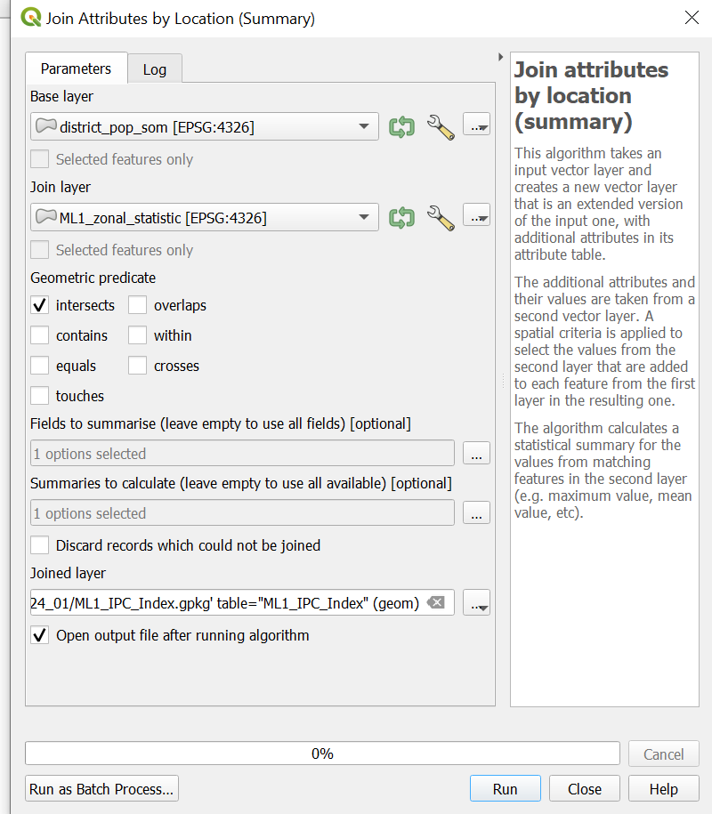

Exercise 3: Trigger & Intervention Map for Forecast-based-Action#
🚧This training platform and the entire content is under ⚠️construction⚠️ and may not be shared or published! 🚧
Characteristics of the exercise#
Aim of the exercise:
This exercise is based on the monitoring and triggering process used by the Somalia Red Crescent Society (SRCS) in the framework of a drought Early Action Protocol (EAP).
Within this exercise, you will build a simplified version of the monitoring and trigger mechanism for the FEWSNET projection pillar.
Type of trainings exercise:
This exercise can be used in online and presence training.
It can be done as a follow-along exercise or individually as a self-study.
These skills are relevant for
Estimated time demand for the exercise.
Relevant Wiki Articles
Intersection
Zonal Statistics
Join Attributes by location (summary
Table functions
Instructions for the trainers#
Trainers Corner
Prepare the training
Take the time to familiarise yourself with the exercise and the provided material.
Prepare a white-board. It can be either a physical whiteboard, a flip-chart, or a digital whiteboard (e.g. Miro board) where the participants can add their findings and questions.
Before starting the exercise, make sure everybody has installed QGIS and has downloaded and unzipped the data folder.
Check out How to do trainings? for some general tips on training conduction
Conduct the training
Introduction:
Introduce the idea and aim of the exercise.
Provide the download link and make sure everybody has unzipped the folder before beginning the tasks.
Follow-along:
Show and explain each step yourself at least twice and slow enough so everybody can see what you are doing, and follow along in their own QGIS-project.
Make sure that everybody is following along and doing the steps themselves by periodically asking if anybody needs help or if everybody is still following.
Be open and patient to every question or problem that might come up. Your participants are essentially multitasking by paying attention to your instructions and orienting themselves in their own QGIS-project.
Wrap up:
Leave time for any issues or questions concerning the tasks at the end of the exercise.
Leave some time for open questions.
Background#
Setting triggers is one of the cornerstones of the Forecast-based Financing (FbF) system. For a National Society to have access to automatically released funding for their early actions, their Early Action Protocol needs to clearly define where and when funds will be allocated, and assistance will be provided. In FbF, this is decided according to specific threshold values, so-called triggers, based on weather and climate forecasts, which are defined for each region (see FbF Manual).
For the development of the Somaliland-Somalia Drought Trigger mechanism, various datasources were thoroughly analysed. Finally, the main parameters chosen for the trigger based on the historical impact assessment are the twelve month Standard Precipitation Index (SPI12) and the IPC acute food insecurity classification. The exact data used are the documented and forecasted SPI12 (source: ICPAC) and the forecasted IPC classification (8 month forecast, source: FEWSNET), that is used to calculate a population weighted index of food insecurity. The trigger thresholds for both components were optimised towards the most favourable proportion of hit rate and false alarm rate. The emerging thresholds were <-1 for the SPI12 and >=0,7 for the IPC based index. The triggering is done on district level and per district just one trigger initiation per year is possible.
Trigger Statement
When ICPAC issues a SPI-12 forecast of less than -1 for a district AND the current FEWSNET food insecurity projection reaches at least 0.7 in its derived population weighted index in the same district, then we will act in this district. We expect the lead-time to be 90 days.
Available Data#
Food Insecurity Projection data#
The drought trigger mechanism is based on two variable monitoring datasets. One of them Food Insecurity projection produced by FEWSNET which is updated ruffly every month.
Dataset |
Source |
Description |
|---|---|---|
IPC Projections |
five-phase scale providing common standards for classifying the severity of acute or anticipated acute food insecurity. |
What is IPC Food Security Projection Data?#
The IPC is a commonly accepted measure and classification to describe the current and anticipated severity of acute food insecurity. The classification is based on a convergence of available data and evidence, including indicators related to food consumption, livelihoods, malnutrition and mortality. Food Insecurity is one of the prioritised impacts of droughts in Somalia which is why it is also used for the triggering mechanism, in a population-weighted index.
Three times a year (February, June, and October) FEWSNET estimates most likely IPC classes for the upcoming 8 month (near-term and mid-term projection), available from 2019-current. The near-term projection is called ML1 and is a projection for the upcoming 4 month, the mid-term projection is called ML2 and projects the IPC classes for the 4 subsequent months. For the triggering ML1 (near-term) as well as ML2 (mid-term) projections will be considered.
Outlook updates are produced almost every month and are also taken into account.
Colour |
Phase |
Descriptions |
|---|---|---|
|
1. Minimal |
Households are able to meet essential food and non-food needs without engaging in atypical and unsustainable strategies to access food and income. |
|
2. Stressed |
Households have minimally adequate food consumption but are unable to afford some essential non-food expenditures without engaging in stress-coping strategies. |
|
3. Crisis |
Households either have food consumption gaps that are reflected by high or above-usual acute malnutrition OR are marginally able to meet minimum food needs but only by depleting essential livelihood assets or through crisis-coping strategies. |
|
4. Emergency |
Households either have large food consumption gaps which are reflected in very high acute malnutrition and excess mortality; OR are able to mitigate large food consumption gaps but only by employing emergency livelihood strategies and asset liquidation. |
|
5. Famine |
Households have an extreme lack of food and/or other basic needs even after full employment of coping strategies. Starvation, death, destitution, and extremely critical acute malnutrition levels are evident. (For Famine Classification, area needs to have extreme critical levels of acute malnutrition and mortality.) |


Training Data#
Download the data folder here and save it on your PC. Unzip the .zip file!
For this particular exercise, we will use a combination of pre-processed data and the download of real data from FEWS.net. The preprocessed datasets are:
Dataset |
Source |
Description |
|---|---|---|
Administrative boundaries |
The administrative boundaries on level 0-2 for Somalia and Somaliland can be accessed via HDX. For this trigger mechanism we provide the administrative boundaries on level 2 (district level) as a shapefile. We have added the population number for each district derived from Worldpop. |
|
Population Counts |
The worldpop dataset in .geotif raster format provides population estimates per hectare for the year 2020 |
Whereas the IPC-Projections data will be downloaded by the participants directly from FEWS.net.
Dataset |
Source |
Description |
|---|---|---|
IPC Projections |
five-phase scale providing common standards for classifying the severity of acute or anticipated acute food insecurity. |
Task#
Attention
Some of the images and videos are not 100 % accurate for this particular exercise since they were take from the real trigger workflow of SRCS, which is more complex.
Step 1: Setting up folder structure#
Purpose: In this step, we set up the correct folder structure to make the analysis easier and to ensure consistent results.
Tool: No special tools or programs are needed.
Instruction |
Folder Structure |
|---|---|
|

|
The Video below shows the process for setting up the folder for December 2023.
Video: Setting up folder structure
Step 2: Download of the forecast data#
Purpose: In this step, we will download the forecast data on which our triggers will be based.
Tool: Internet Browser
The IPC data will be pulled from the FEWSNET website. FEWS NET publishes IPC data on its website. The main data publications, as well as the updates of the IPC data, amount to the publication of new data almost monthly.
IPC Data#
The IPC Projection data is provided and regularly updated on the FEWSNET Website.
On the website, you will have to click on Somalia to access the data. Alternatively, you can navigate through Data -> Acute Food Insecurity Data and enter „Somalia”. In the menu you will see different data formats for different timestamps. Once you find out which timestamp is the most current one, find the ZIP download. We need the data in shapefile (.shp) format, which is only included in the ZIP file and not provided as single download file.
Warning
The FEWSNET pages change often!
Go to FEWSNET Website. Click on
Data->Acute Food Insecurity.Scroll down. In
Geographic Area, type in “Somalia” and clickApplyChoose the newest dataset.

Download the one with the ZIP Data
When you have downloaded the data, right-click on the file and click on
Extract all->ExtractOpen the extracted folder and copy the ML1 data in the IPC_ML1 folder you have created in step 1.
The filename is composed of “SO” for Somalia, year and month of the report month e.g
SO_202308_ML1.shpExample path:.../Modul_5_Exercise2_Drought_Monitoring_Trigger/Monitoring/Year_Month_template/IPC_ML1
Warning
Make sure to not use the ML1_IDP data which comes in the .zip folder as well!
Warning
Remember that you need to copy over all components that the respective shapefile is composed of. Most probably it has 5 components: .cpg, .dbf, .prj, .shp, and .shx.

Tip
On the main FEWSNET page, you can also sign up for information on latest updates via email. For this option scroll down to the end of the page and click on Sign up for Emails. You will get the option to choose updates only for Somalia.
{kind=link}
Step 3: Loading data into QGIS#
Purpose: In this step, all the data needed will be loaded into a QGIS-project so we can analyse the data.
Tool: No specific tools are needed, only QGIS.
Open QGIS and create a new project by clicking on
Project->NewOnce the project is created, save the project in the folder you created in Step 1 (e.g. 2022_05). To do that, click on
Project->Save asand navigate to the folder. Give the project the same name as the folder you created (e.g. 2022_05). Then clickSaveLoad all input data in QGIS by drag and drop. Click on
Project->Save
From the folder you created in step 1
ML1
From the
Fixes_datafolder:district_pop_som
WorldPop_som.tif
Result: QGIS project with all necessary data ready to be analysed.
Step 4: Intersection of ML 1 data with the district polygons#
Purpose: The goal is to receive polygon layers which share both the borders and the attributes of both input layers.
Tool: Intersection
Instruction |
Screenshot of the Intersection window |
|---|---|
|

|
Result: After doing this for ML1, you should have one polygon layer containing all columns of ML1 and district_pop_sum.
Note
The resulting layer can have more rows than the original layers.
Video: Intersection of ML 1 data with the district polygons
Step 5: Calculation of Population per Intersection Polygon#
Purpose: Here we calculate the population in each polygon of the intersection layer from step 4.
Tool: Zonal Statistics
Instruction |
Screenshot of the Zonal Statistics window |
|---|---|
|

|
Result: The result should be the “ML1_zonal_statistic” as a polygon layer. This layer should have the same columns in the attribute table like ML1_Intersection plus the column “_sum”, which is the number of people living in the single parts of the polygons.
Video: Calculation of Population per Intersection Polygon
Step 6: Weighting of the Population based on IPC-Phase#
Purpose: The purpose of this step is the weighting of the population in the five IPC phases as described in IPC Data.
Note
The IPC Index treats low-population districts the same as high-population districts, ensuring that small districts with high food insecurity are not underrepresented.
IPC-Population Weighted Index
To better utilize the IPC data, a straightforward population-weighted index was created. This index assigns weights to relative population numbers based on their respective IPC classes, emphasizing the number of people in each IPC class rather than just the class itself. Additionally, populations in higher IPC classes are given more importance than those in lower classes. The index is calculated as follows:
$ IPC\ Index = Weights \times \frac{District\ Pop\ per\ IPC\ Phase}{Total\ District\ Pop}$
Where the weights are defined as:
IPC Phase |
Weight |
|---|---|
IPC 1 |
0 |
IPC 2 |
0 |
IPC 3 |
1 |
IPC 4 |
3 |
IPC 5 |
6 |
The IPC Index represents low-population districts equal to high-population districts. No underrepresentation of high food insecurity of small districts occurs.
Tool: Field Calculator
Right-click on the layer “ML1_zonal_statistic” ->
Open Attribute Table-> click onField Calculator to open the field calculator
to open the field calculatorCheck
Create new fieldOutput field name: Name the new column “pop_sum_weighted”Result field type: Decimal number (real)Add the code block from Input into the
Expressionfield Clickok
CASE
WHEN "ML1" = 3 THEN "_sum" * 1
WHEN "ML1" = 4 THEN "_sum" * 3
WHEN "ML1" = 5 THEN "_sum" * 6
ELSE "_sum"
END
When you are done, click
 to save your edits and switch off the editing mode by again clicking on
to save your edits and switch off the editing mode by again clicking on  (Wiki Video).
(Wiki Video).
Step 7: Calculation of Population Proportion per Intersection Polygon#
Purpose: In this step, we calculating the IPC-Population Weighted Index for every small part of the polygon layer.
Tool:Field Calculator
Right-click on “ML1_zonal_statistic” layer -> “Attribute Table”-> click on
Field Calculator to open the field calculatorCheck
Create new fieldOutput field name: Name the new column “Index_per_IPCPolygon_ML1”Result field type: Decimal number (real)Add the following code into the
Expressionfield
"pop_sum_weighted"/"districtpo"
Click
okSave the new column by clicking on
in the attribute table and turn off editing mode by clicking on

Result: The layer “ML1_zonal_statistic” should now have the column “Index_per_IPCPolygon_ML1”. The numbers in this column have to be smaller than in the “district” column.
Video: Calculation of Population Proportion per Intersection Polygon
Step 8: Calculate IPC Index per District#
Purpose: The purpose of this step is to calculate a population-weighted mean over the IPC classes per district. In this way, the amount of people living in a certain IPC class will be given more importance than just the area affected by a certain IPC class. The result is an IPC Index value for each district.
Tool: Join attribute by location (summary)
Instruction |
Join attribute by location (summary) |
|---|---|
|
 |
{kind=link}
Result: As a result, your layer “ML1_IPC_Index” should have the column “Index_per_IPCPolygon_ML1_mean”. Furthermore, the number of rows should be the exact number of districts in Somalia and the polygons should have the exact shape of the districts.
Video: Calculate IPC Index per District
Step 9: Evaluate Trigger Activation#
Purpose: The purpose of this step is to gain a quick overview of possible trigger activation without having to revise the actual data. Instead, we will have a binary column with trigger = yes or trigger=no values.
Tool: Field Calculator
Right-click on “ML1_IPC_Index” layer ->
Attribute Table-> click onField Calculator to open the field calculatorCheck
Create new fieldOutput field name: Name the new column “Trigger_activation”Result field type: Text (string)Add the code below into the
ExpressionfieldSave the new column by clicking on
in the attribute table and end the editing mode by clicking on
Code |
|---|
CASE
WHEN "Index_per_IPCPolygon_ML1_mean" >0.7
THEN 'yes'
ELSE 'no'
END
|
Click
okSave the new column by clicking on
in the attribute table and end the editing mode by clicking on
Result: A layer with all districts of Somalia with a column of “Yes” and “No” values indicating whether the trigger levels have been reached or not.

Video: Evaluate Trigger Activation
Step 10.: Visualisation of results#
Purpose: Definition of how features are represented visually on the map.
Tool: Symbology
Trigger Activation
Right-click on the “ML1_IPC_Index” layer ->
Properties->SymbologyIn the down left corner click on
Style->Load StyleIn the new window click on the three points
 . Navigate to the “FbF_Drought_Monitoring_Trigger/layer_styles” folder and select the file “Style_Trigger_Activation_ex.qml”.
. Navigate to the “FbF_Drought_Monitoring_Trigger/layer_styles” folder and select the file “Style_Trigger_Activation_ex.qml”.Click
Open. Then click onLoad StyleBack in the “Layer Properties” Window click
ApplyandOK
Info: Trigger Activation Layer
You will now see districts where no trigger is activated in green and districts with trigger activation in pink.
The “Style_Trigger_Activation.qml” style layer is configured to show the district names only where the trigger is actually activated. If there is no trigger activation you can activate the admin 1 boundary layer for better map orientation (see Administrative 2 Boundaries below)

Administrative 2 Boundaries (Regions)
Right click on the “Som_admin1_regions_UNDP.gqkp” (Regions) layer ->
Properties->SymbologyIn the down left corner click on
Style->Load StyleIn the new window click on the three points
. Navigate to the “FbF_Drought_Monitoring_Trigger/layer_styles” folder and select the file “SOM_regions_style_ex.qml”.Click
Open. Then click onLoad StyleBack in the “Layer Properties” Window click
ApplyandOKAdd a the OpenStreetMap basemap by clicking on
Layer->Add Layer->Add XYZ layer...-> Select the OpenStreetMap. ClickAdd. (Wiki basemap)Place the OpenStreetMap basemap on the bottom.
Delet all layers exept:
Trigger_activation
Som_admin1_regions_UNDP
OpenStreetMap
Video: Visualisation of results
Intervention Map without Trigger activation |
Intervention Map with Trigger activation |
|---|---|

|
|
Attention
Remember the layer concept and make sure the basemap layer is at the bottom of your layers panel.
Step 11: Making print map#
Purpose: Visualisation of the map features in a printable map layout
Tool: Print Layout
If not done before, delete all layers expect Trigger_activation, Som_admin1_regions_UNDP and OpenStreetMap
Open a new print layout by clicking on
Project->New Print Layout-> enter the name of your current Project e.g “2024_01”.Go the the
Modul_5_Exercise2_Drought_Monitoring_Triggerfolder and drag and drop the fileTrigger_activation_Intervention_map_ex.qptin the print layoutChange the date to the current date by clicking on “Further map info…” in the items panel. Click on the
Item Propertiestab and scroll down. Here you can change the date in theMain Propertiesfield.If necessary, adjust the legend by clicking on the legend in the
Item Propertiestab and scroll down until you see theLegend itemsfield. If it is not there check if you have to open the dropdown. Make sureAuto updateis not checked.Remove all items in the legend be clicking on the item and then on the red minus icon below.
Add Trigger_activation to the legend by clicking on the green plus and click on the layer and click
okAdd Som_admin1_regions_UNDP to the legend by clicking on the green plus and click on the layer and click
ok
Video: Making a print map
Attention
Make sure you edit the Map Information on the template, e.g. current date. Also make sure to check the legend items: Remove unnecessary items and eventually change the names to meaning descriptions.
You can also adapt the template to your needs and preferences. You can find help here.
Attention
Make sure you edit the Map Information on the template, e.g. current date. Also make sure to check the legend items: Remove unnecessary items and eventually change the names to meaning descriptions.
Step 13.: Exporting Map#
Purpose: Export the designed and finalised map layout in order to print it as a pdf or format of your choice.
Tool: Print Layout
When you have finished the design of you map, you can export it as pdf or image file in different data types.
Export as Image
In the print layout click on
Layer->Export as ImageChose the Result folder in the folder you have created in step 1. Give the file the name of the project e.g 2022_04
Click on
SaveThe window “Image Export Options” will appear. Click
SaveNow the image can be found in the result folder in the folder you created in Step 1
Export as PDF
In the print layout click on
Layer->Export as PDFChose the Result folder in the folder you have created in step 1. Give the file the name of the project e.g 2022_04
Click on
SaveThe window “PDF Export Options” will appear. For the best results, select the
losslessimage compression.Click
SaveNow the image can be found in the result folder in the folder you created in Step 1